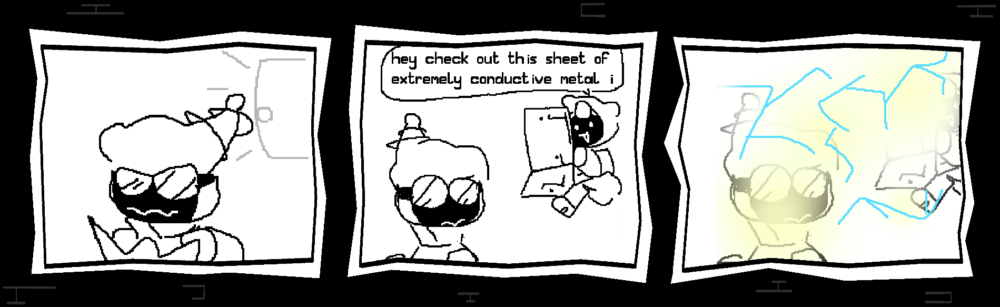
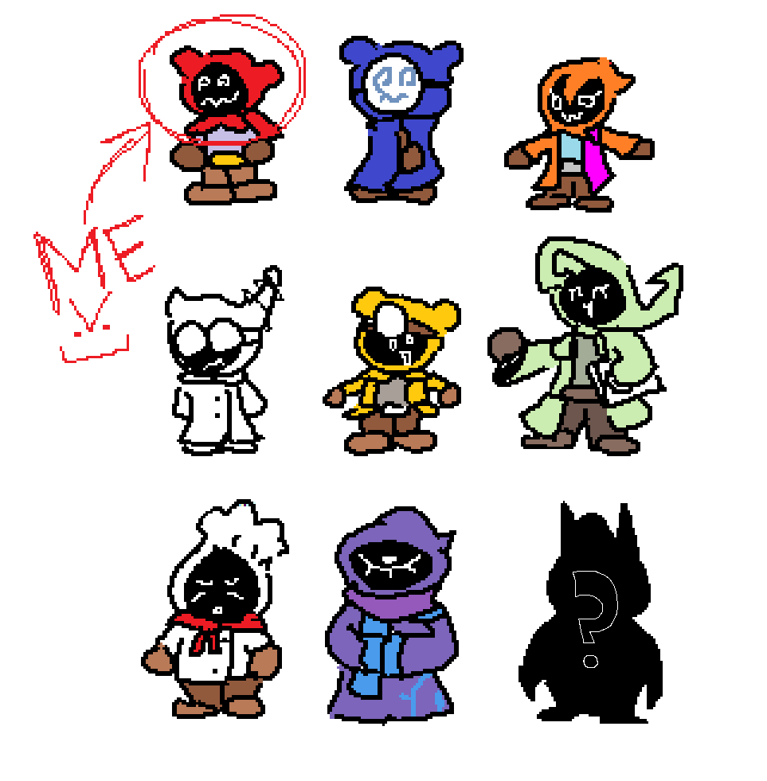

|
HEY VISITOR! This page only contains the latest post. For historical posts, click HERE! |
FRIENDS HOME FOR THE HOLI-DUNGEON!
Posted by Axol on December 25th 2024 
''TDHY Blog Comic #2 by: NIDO | Shocking Results''
Hello everyone! It's been a hot minute. Actually, it's been a hot several months... In that time, a lot of things happened with the state of the game, the lore, new music, how everything looks and sounds, etc etc.. SO much has happened, you wouldn't believe it. But we're not gonna cover everything at once.
We're gonna be talking about NPCs within the Hideout this time! They can give you tools, items, even provide services during a run! If you have the gems to afford it, of course.

''Together, we are... The Dungeon Hates You!!!''
These services range from special potions and food, custom made cloaks, forging weapons, selling back weapons you lost on the last run at a noticeably jacked price, full heals, giving you risky debuffs to endure for rewards, gambling all your money, eating all your money. Etc. Etc.
The Baker makes the finest cuisine out of the critters you slaughter. Yummers!!!
While some 'food' can be found within the Dungeon itself, be it chests or monster meat, the taste is subpar and foul. You can eat them in a pinch but, if i were you? I'd hold on to it and bring it back home, you'll never know when he might need more ingredients!
The Tunneler specializes in excavation, thanks to him digging out the entire No-Through-Grove in an afternoon, Delver can comfortably sleep in his own little bedroom to regain stats and store some items for later. You're gonna have to clean up the place yourself though...
He can be found around the Hideout, giving you a tour of the place, catching you up with hundreds of years of absolutely zero progress of freedom. He's also completely useless to you. You'll love him! He's THE tunneler! The iconic Dungeon Hates You character!
In other news... We've recruited another fantastic musician for the game. Chombachoo's got just the right sound we need, heres a track he made for a character you'll meet soon.
Remember, 99% quit right before they hit it big. KEEP GAMBLING.
That's all for now... Thank you from the bottom of our hearts for showing any form of support for our weird little game, we hope to-
...
Hold on, what's this?
Delver? You... made your own song?
You want to show it to the people?
Alright, take care everyone, and enjoy Delver's lovely little song.